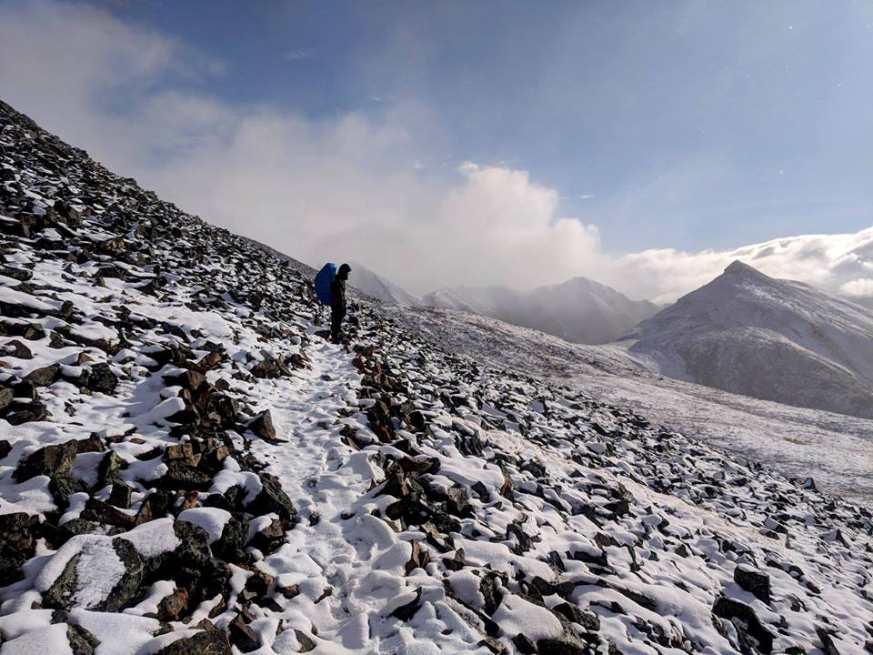

Geomatics Science Student at York University Toronto, Ontario, Canada Email: npolanyi@my.yorku.ca
I am a fourth year Geomatic Science undergraduate student at York University specializing in high precision land surveying, remote sensing, data integration and geographic information systems (GIS). I am interested in further developing my skills in the professional land information field with a position as a GIS or data analyst. I have strong computational skills and am interested in working to integrate large datasets.
Lassonde School of Engineering, B.Sc., Spec. Hons. Earth & Atmos. Science (Earth Science) (2015 - 2019)
| Course Code | Course Title | Semester Taken |
|---|---|---|
| ESSE 4600 | GIS and Data Integration | Winter 2019 |
| ESSE 3640 | Geodetic Surveys | Winter 2019 |
| ESSE 3650 | Photogrammetry | Winter 2019 |
| ESSE 3670 | Global Navigation Satellite Systems | Winter 2019 |
| ESSE 4020 | Time Series and Spatial Analysis | Fall 2018 |
| ESSE 4220 | Remote Sensing | Fall 2018 |
| ESSE 3610 | Geodetic Concepts | Fall 2018 | ESSE 2630 | Field Surveys | Spring 2018 |
Rouse Surveyors Inc. (April 2018 - September 2018) Toronto, ON - Accurately observed targets, read and set the angles and distances, recorded measurements on the data collector and assisted the Party Chief in setting monuments - Increased efficiency and accuracy in all areas of field work - Identified potential problems prior to starting work on a site - Uploaded and downloaded data between the office server and data collector - Inspected equipment, ensuring everything was recharged, clean, and in good working order - Prepared and loaded the required equipment and materials into the vehicle for the site each day - Set up and dismantled all survey equipment at the site - Completed all assignments as directed by the Party Chief - Communicated all problems, errors, questions and concerns to the Party Chief - Assisted the Party Chief with data preparation in the office - Adhered to all Health and Safety Policies and Regulations as per the Occupational Health and Safety Act and Rouse Surveyors Inc. Health and Safety Policy - Maintained a clean and orderly work environment and site at all times
- Backpacking/Camping - Renuable Energy - Chess - Sports: Hockey, Soccer, Baseball - Boardgames
